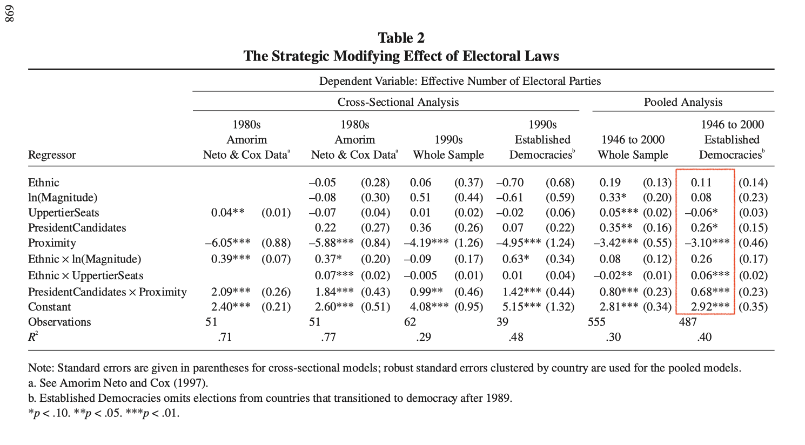
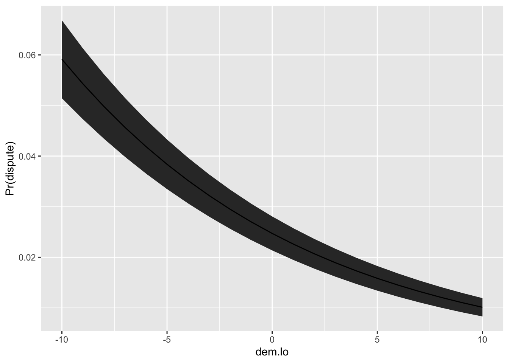

# load Clark and Golder's data
cg <- crdata::cg2006 # from my data packageWeek 4 Exercises
Complete solutions open Friday, September 18 at 12:00 PM
Note: These exercises are tending toward “tedious” and “rote.” However, I want to make sure that we understand the implementation of the basic framework, so there’s a lot of tedious repetition in this homework.
Exercise 1 Berk (2010)
- Berk distinguishes Level I (descriptive), Level II (statistical inference), and Level III (causal inference) regression analyses. Summarize the features of each level in your own words. Explain why Berk argues that most regressions in criminology are Level I. Does his claim about criminology apply to political science as well?
- Select an empirical article you are already familiar with from your subfield that uses non-experimental (i.e., observational) data. Identify how the authors use regression. At what level does the authors claim to operate? Use direct quotes if possible. At what level does the analysis actually operate? Explain.
- Berk critiques observational regression treated as causal. He also lists common responses (e.g., “the assumptions are reasonable,” “we all have models,” “you have to make assumptions to make progress”). Pick one response and assess whether you find it persuasive. Defend your position. How might you design a study in your area that could move from Level I or II toward Level III without weak rhetorical defenses? Perhaps give an example.
- Berk concludes that, with rare exceptions, regression analyses of observational data should be treated as Level I. Do you agree? If you take Berk’s view seriously, what happens to publication standards, peer review, funding, and training?
Complete solution
No solution intended.
Exercise 2 Clark and Golder (2006), normal distribution
Clark and Golder (2006, pdf) fit the following regression model (that we’ve seen several times now).

- Use an R formula and
model.matrix()to create the required design matrixX. Think carefully about the formula needed. - Reproduce their estimates with the matrix multiplication \((X^\top X)^{-1} X^\top y\) or
solve(t(X) %*% X) %*% t(X) %*% y. - Reproduce their estimates using a normal linear model with
optim(). You can easily adapt code likeest_logit()from the notes, remembering that you must combine all parameters (i.e., the vector \(\beta\) and scalar \(\sigma\)) into a single vector \(\theta\) to giveoptim(). See the template below.
normal_ll <- function(par, y, X) {
beta <- par[1:ncol(X)] # pull out the vector of betas
sigma <- par[ncol(X) + 1] # pull out the scalar sigma
... [and so on]
}The least squares and ML estimates of the coefficients should match; for the normal linear model, the ML estimate is just the least squares solution.
Hint 1
The table’s rows tell you which interactions the model includes. In an R formula, a*b adds a, b, and a:b. See Section 10.4 of the notes.
Hint 2
Section 11.0.1 of the notes computes solve(t(X)%*%X)%*%t(X)%*%y on real data. est_logit() in Section 11.1.2 is the optim() code to adapt. Notice that dnorm() needs a positive sd, so give \(\sigma\) a positive starting value.
Complete solution
Solution
# load data
cg <- crdata::cg2006
glimpse(cg)Rows: 487
Columns: 8
$ country <chr> "Argentina", "Argentina", "Argentina", "Argentina", …
$ year <dbl> 1946, 1951, 1954, 1958, 1960, 1963, 1965, 1973, 1983…
$ average_magnitude <dbl> 10.53, 10.53, 4.56, 8.13, 4.17, 8.35, 4.17, 10.13, 1…
$ eneg <dbl> 1.342102, 1.342102, 1.342102, 1.342102, 1.342102, 1.…
$ enep <dbl> 5.750, 1.970, 1.930, 2.885, 5.485, 5.980, 5.155, 3.1…
$ upper_tier <dbl> 0, 0, 0, 0, 0, 0, 0, 0, 0, 0, 0, 0, 0, 0, 0, 0, 0, 0…
$ en_pres <dbl> 2.09, 1.96, 1.96, 2.65, 2.65, 3.90, 3.90, 2.66, 2.30…
$ proximity <dbl> 1.00, 1.00, 0.20, 1.00, 0.20, 1.00, 0.33, 1.00, 1.00…# create design matrix
f <- enep ~ eneg*log(average_magnitude) + eneg*upper_tier + en_pres*proximity
mf <- model.frame(f, data = cg)
X <- model.matrix(f, data = mf)
y <- model.response(mf)
# OLS
solve(t(X) %*% X) %*% t(X) %*% y [,1]
(Intercept) 2.91570805
eneg 0.11160359
log(average_magnitude) 0.07798753
upper_tier -0.05655491
en_pres 0.26384754
proximity -3.09756561
eneg:log(average_magnitude) 0.26366122
eneg:upper_tier 0.05919037
en_pres:proximity 0.68317107# MLE via optim (normal-errors)
normal_ll <- function(theta, y, X){
k <- ncol(X)
beta <- theta[1:k]
sigma <- theta[k+1]
mu <- X%*%beta
sum(dnorm(y, mu, sigma, log = TRUE))
}
# use optim()
theta_start <- c(rep(0, ncol(X)), 2)
est <- optim(
par = theta_start,
fn = normal_ll,
y = y,
X = X,
method = "BFGS",
control = list(fnscale = -1)
)Warning in dnorm(y, mu, sigma, log = TRUE): NaNs produced
Warning in dnorm(y, mu, sigma, log = TRUE): NaNs produced
Warning in dnorm(y, mu, sigma, log = TRUE): NaNs produced
Warning in dnorm(y, mu, sigma, log = TRUE): NaNs produced
Warning in dnorm(y, mu, sigma, log = TRUE): NaNs produced
Warning in dnorm(y, mu, sigma, log = TRUE): NaNs produced
Warning in dnorm(y, mu, sigma, log = TRUE): NaNs produced
Warning in dnorm(y, mu, sigma, log = TRUE): NaNs produced
Warning in dnorm(y, mu, sigma, log = TRUE): NaNs produced
Warning in dnorm(y, mu, sigma, log = TRUE): NaNs produced
Warning in dnorm(y, mu, sigma, log = TRUE): NaNs produced
Warning in dnorm(y, mu, sigma, log = TRUE): NaNs produced
Warning in dnorm(y, mu, sigma, log = TRUE): NaNs producedest$par # matches ols from above [1] 2.91570243 0.11161188 0.07798356 -0.05655386 0.26384097 -3.09755108
[7] 0.26366069 0.05918970 0.68317320 1.31999212Exercise 3 Matching formulas to linear predictors
These use ZeligData::turnout, the data from the logit example in the notes. race is a factor with levels others (the baseline) and white; age, educate, and income are numeric.
# load the turnout data
turnout <- ZeligData::turnoutThe table below pairs fifteen linear predictors with the fifteen formulas that produce them, but the formulas are scrambled. The linear predictors run from two columns in the design matrix up to seven.
| Linear predictor \(\eta_i\) | Formula | ||
|---|---|---|---|
| 1 | \(\beta_0 + \beta_1\text{age}_i\) | A | vote ~ age*educate |
| 2 | \(\beta_0 + \beta_1\log(\text{age}_i)\) | B | vote ~ race - 1 |
| 3 | \(\beta_0 + \beta_1\sqrt{\text{income}_i}\) | C | vote ~ income + educate |
| 4 | \(\beta_0 + \beta_1\text{white}_i\), where \(\text{white}_i = 1\) for white respondents | D | vote ~ age:educate |
| 5 | a separate intercept for each race, and no common intercept | E | vote ~ sqrt(income) |
| 6 | \(\beta_0 + \beta_1(\text{income}_i + \text{educate}_i)\) | F | vote ~ race*educate |
| 7 | \(\beta_0 + \beta_1(\text{age}_i \times \text{educate}_i)\) | G | vote ~ age^2 |
| 8 | \(\beta_0 + \beta_1\text{age}_i + \beta_2\text{educate}_i\) | H | vote ~ I(income + educate) |
| 9 | \(\beta_0 + \beta_1\text{income}_i + \beta_2\text{educate}_i\) | I | vote ~ race |
| 10 | \(\beta_0 + \beta_1\text{age}_i + \beta_2\text{age}_i^2\) | J | vote ~ (age + educate + income)^2 |
| 11 | one intercept shared by both races, but a separate education slope for each | K | vote ~ age + I(age^2) |
| 12 | \(\beta_0 + \beta_1\text{age}_i + \beta_2\text{age}_i^2 + \beta_3\text{age}_i^3\) | L | vote ~ log(age) |
| 13 | \(\beta_0 + \beta_1\text{age}_i + \beta_2\text{educate}_i + \beta_3(\text{age}_i \times \text{educate}_i)\) | M | vote ~ race:educate |
| 14 | \(\beta_0 + \beta_1\text{white}_i + \beta_2\text{educate}_i + \beta_3(\text{white}_i \times \text{educate}_i)\) | N | vote ~ age + educate |
| 15 | all three of age, educate, and income, plus all three pairwise products |
O | vote ~ poly(age, 3, raw = TRUE) |
- Match each linear predictor to the one formula that produces it. Each formula is used exactly once. Work these out without running R.
- Now run
model.matrix()on the ones you were unsure about and compare the column names to your answer. Note any you got wrong and explain what you expected instead. - Several of these are worth a second look. For each group below, explain what R did and why.
- G and J both use
^, and neither one produces a squared term. What does^do to the terms inside it, and why doesage^2collapse to a singleagecolumn? Which formula in the table is the only one that puts an actual square in the design matrix? - K and O both put a polynomial in
ageinto the design matrix, one written out by hand and one built bypoly(). What doesraw = TRUEdo? Refit O without it and compare the coefficients and the fitted values. Why does the fit not change? - D and M both use
:without*.age:educategives a product and no main effects, butrace:educategives two interaction columns where F gives one. Why does dropping the main effect change the number of interaction columns for the factor but not for the numeric variable? - C and H use the same two variables but produce a different number of columns. What restriction on C’s coefficients does H impose?
- B and I describe the same two groups. What does each coefficient means? Confirm that the two models produce the same fitted values. Why can a model not include an intercept and an indicator for both races?
- G and J both use
Hint 1
We need four operators:
+adds a column:forms a product*expands to both main effects and the product-removes
Important: ^ is not arithmetic. It probably doesn’t work like you expect.
See Section 10.4 for * and :, Section 10.5.2 for ^ and I().
See Section 10.2 for factors and dummy variables.
Hint 2
For part 3, a categorical variable with \(m\) categories contributes \(m - 1\) indicators when the model has an intercept. See the “On the baseline” callout in Section 9.6 of the notes.
Complete solution
Solution
Part 1. 1-G, 2-L, 3-E, 4-I, 5-B, 6-H, 7-D, 8-N, 9-C, 10-K, 11-M, 12-O, 13-A, 14-F, 15-J
Part 2.
# load data
turnout <- ZeligData::turnout
# the fifteen formulas, labeled as in the table
formulas <- c(
A = "vote ~ age*educate",
B = "vote ~ race - 1",
C = "vote ~ income + educate",
D = "vote ~ age:educate",
E = "vote ~ sqrt(income)",
F = "vote ~ race*educate",
G = "vote ~ age^2",
H = "vote ~ I(income + educate)",
I = "vote ~ race",
J = "vote ~ (age + educate + income)^2",
K = "vote ~ age + I(age^2)",
L = "vote ~ log(age)",
M = "vote ~ race:educate",
N = "vote ~ age + educate",
O = "vote ~ poly(age, 3, raw = TRUE)"
)
# print the column names of each design matrix
for (i in seq_along(formulas)) {
X <- model.matrix(as.formula(formulas[i]), data = turnout)
cat(names(formulas)[i], ": ", formulas[i], "\n",
" ", paste(colnames(X), collapse = " | "), "\n", sep = "")
}A: vote ~ age*educate
(Intercept) | age | educate | age:educate
B: vote ~ race - 1
raceothers | racewhite
C: vote ~ income + educate
(Intercept) | income | educate
D: vote ~ age:educate
(Intercept) | age:educate
E: vote ~ sqrt(income)
(Intercept) | sqrt(income)
F: vote ~ race*educate
(Intercept) | racewhite | educate | racewhite:educate
G: vote ~ age^2
(Intercept) | age
H: vote ~ I(income + educate)
(Intercept) | I(income + educate)
I: vote ~ race
(Intercept) | racewhite
J: vote ~ (age + educate + income)^2
(Intercept) | age | educate | income | age:educate | age:income | educate:income
K: vote ~ age + I(age^2)
(Intercept) | age | I(age^2)
L: vote ~ log(age)
(Intercept) | log(age)
M: vote ~ race:educate
(Intercept) | raceothers:educate | racewhite:educate
N: vote ~ age + educate
(Intercept) | age | educate
O: vote ~ poly(age, 3, raw = TRUE)
(Intercept) | poly(age, 3, raw = TRUE)1 | poly(age, 3, raw = TRUE)2 | poly(age, 3, raw = TRUE)3The three that usually cause trouble:
- G
age^2produces(Intercept)andageonly, so it matches 1 rather than 10. - H
I(income + educate)produces one coefficient on the sum; Cincome + educateproduces two. - M
race:educateproducesraceothers:educateandracewhite:educate: a separate education slope for each race, with one shared intercept.
Part 3.
^ on G and J. ^n crosses the terms inside the parentheses up to order n, and crossing a variable with itself just returns the variable.
- G
age^2therefore collapses toage:(Intercept) | age. - J
(age + educate + income)^2gives the three main effects and the three pairwise products — again no squares. - K
age + I(age^2)is the only formula in the table with an actual squared column.I()insulates the expression so that R evaluatesage^2as arithmetic rather than as a formula operator. See Section 10.5.2 of the notes.
poly() on K and O. poly(age, 3, raw = TRUE) produces the columns age, age^2, and age^3 (i.e., exactly what writing age + I(age^2) + I(age^3) by hand gives). K is the quadratic version of the same idea.
Dropping raw = TRUE gives orthogonal polynomials (i.e., three columns that are linear combinations of the powers, rescaled to be uncorrelated with each other). The fitted values and the log-likelihood are identical; only the coefficients differ (i.e., the orthogonal coefficients are not the polynomial’s \(\beta_1\), \(\beta_2\), and \(\beta_3\).) See Section 10.3.1 of the notes.
# raw powers, by hand and by poly()
fit_raw <- glm(vote ~ poly(age, 3, raw = TRUE), family = binomial, data = turnout)
fit_hand <- glm(vote ~ age + I(age^2) + I(age^3), family = binomial, data = turnout)
all.equal(unname(coef(fit_raw)), unname(coef(fit_hand)))[1] TRUE# orthogonal polynomials, the default
fit_orth <- glm(vote ~ poly(age, 3), family = binomial, data = turnout)
rbind(raw = unname(coef(fit_raw)), orthogonal = unname(coef(fit_orth))) [,1] [,2] [,3] [,4]
raw -2.736302 0.1917304 -0.002614735 9.716534e-06
orthogonal 1.114008 8.3811586 -15.519527075 2.478206e+00all.equal(fitted(fit_raw), fitted(fit_orth))[1] TRUE: on D, M, and F. : forms the product without adding the main effects.
- D
age:educategives(Intercept) | age:educate. Two numeric variables have one product between them, so the column count does not depend on whether the main effects are there. - M
race:educategivesraceothers:educateandracewhite:educate(i.e., a separate education slope for each race, with one shared intercept). - F
race*educatealready includesracewhite, so onlyracewhite:educatecan be added. The education slope is \(\beta_{\text{educate}}\) for others and \(\beta_{\text{educate}} + \beta_{\text{interaction}}\) for white respondents. See Section 10.4 of the notes.
C and H. C estimates \(\beta_1\text{income}_i + \beta_2\text{educate}_i\); H estimates a single coefficient on the sum, which is C with \(\beta_1 = \beta_2\) imposed. H is C with one restriction, so it has one fewer column and one more residual degree of freedom. Notice that the + inside I() is arithmetic; without I() it is the formula operator that adds a term.
B and I. The two are the same model written two ways, so they produce identical fitted values.
# the same two groups, parameterized two ways
fit_i <- glm(vote ~ race, family = binomial, data = turnout)
fit_b <- glm(vote ~ race - 1, family = binomial, data = turnout)
coef(fit_i)(Intercept) racewhite
0.5181383 0.6699191 coef(fit_b)raceothers racewhite
0.5181383 1.1880573 # identical fits
all.equal(fitted(fit_i), fitted(fit_b))[1] TRUE- In I, the intercept is the log-odds of voting for
others(the baseline) andracewhiteis the difference between whites and others. - In B,
raceothersandracewhiteare each group’s own log-odds. There is no baseline and no difference reported; note that(Intercept) + racewhitefrom I equalsracewhitefrom B. - A factor with \(m\) categories can contribute only \(m - 1\) indicators alongside an intercept. The \(m\) indicators sum to the column of 1s, so including all of them makes the design matrix collinear and the model unidentified. See Section 9.6 of the notes.
Exercise 4 Probit
The probit model uses the cdf of the normal distribution (e.g., often denoted as \(\Phi(\cdot)\); pnorm() in R) rather than the inverse logit.
- Adapt the code from the notes to fit a probit model (or see this Gist). Use the same
ZeligData::turnoutdata and model specificationvote ~ age + educate + income + race. - Compare your probit coefficients to the logit coefficients from the notes. Notice that multiplying probit coefficients by 1.6 gives you roughly the logit coefficients.
- Adapt the code to compute the first difference and 90% confidence interval. Compare to the first difference and 90% confidence interval from the notes.
Hint
The only change from the logit is the inverse link: use pnorm() in place of plogis(), both in the log-likelihood and in the function that computes the first difference. You are adapting est_logit() in Section 11.1.2 and the first-difference code in Section 11.2.2 of the notes.
Complete solution
# load packages
library(tidyverse)
library(numDeriv)
# bernoulli log-likelihood with probit inverse link
probit_ll <- function(beta, y, X) {
p <- pnorm(X %*% beta) # Φ(η)
sum(dbinom(y, size = 1, prob = p, log = TRUE))
}
# function to fit model
est_probit <- function(f, data) {
mf <- model.frame(f, data = data)
X <- model.matrix(f, data = mf)
y <- model.response(mf)
beta_start <- rep(0, ncol(X))
est <- optim(
par = beta_start,
fn = probit_ll,
y = y,
X = X,
hessian = TRUE,
method = "BFGS",
control = list(fnscale = -1)
)
if (est$convergence != 0) warning("Probit model did not converge.")
list(beta_hat = est$par, var_hat = solve(-est$hessian))
}
# formula and data
turnout <- ZeligData::turnout
f <- vote ~ age + educate + income + race
# fit model
fit_probit <- est_probit(f, data = turnout)
# compare probit coefficients to logit coefficients from notes
fit_probit$beta_hat[1] -1.76361803 0.01652753 0.10425348 0.09632643 0.16270805fit_probit$beta_hat*1.6 # similar to logit[1] -2.82178884 0.02644405 0.16680557 0.15412229 0.26033288# build chosen covariate rows
X_lo <- cbind(
"constant" = 1,
"age" = quantile(turnout$age, probs = 0.25),
"educate" = median(turnout$educate),
"income" = median(turnout$income),
"white" = 1
)
X_hi <- X_lo
X_hi[, "age"] <- quantile(turnout$age, probs = 0.75)
# first difference (for probit)
fd_fn_probit <- function(beta, hi, lo) {
pnorm(hi %*% beta) - pnorm(lo %*% beta)
}
# first difference and se
fd_hat_probit <- fd_fn_probit(fit_probit$beta_hat, X_hi, X_lo)
grad_probit <- grad(
func = fd_fn_probit,
x = fit_probit$beta_hat,
hi = X_hi,
lo = X_lo
)
se_fd_hat_probit <- sqrt(grad_probit %*% fit_probit$var_hat %*% grad_probit)
# estimate
fd_hat_probit [,1]
25% 0.1421895# 90% ci
fd_hat_probit - 1.64 * se_fd_hat_probit # lower [,1]
25% 0.1141743fd_hat_probit + 1.64 * se_fd_hat_probit # upper [,1]
25% 0.1702048Exercise 5 Russett and Oneal (2001)
This exercise uses data from Russett and Oneal (2001). The model the probability of a dispute in a dyad-year as a function of several predictors. A quick summary of their book is here. For our purposes, we’ll focus on dem.lo, which is the lower of the two Polity scores in the dyad. For more details on the variables, see ?crdata::ro2001 or Table 1 on p. 277 of Oneal and Russet (1997, pdf).
# load russett and oneal data from {crdata}
ro <- crdata::ro2001Fit the logit model dispute ~ allies + lcaprat2 + contiguity + dem.lo + logdstab + power.
# reproduce their simplest logistic regression model p. 314, table A3.1
f <- dispute ~ allies + lcaprat2 +
contiguity + dem.lo + logdstab + power
fit <- glm(f, family = "binomial", data = ro)
# extract coefficient estimates
beta_hat <- coef(fit)
# extract covariance estimates
v_hat <- vcov(fit)We can make a summary of coefficient estimates with modelsummary(), but it isn’t very informative about the quantity of interest. We want to know how the probability of a dispute is changing!
library(modelsummary)
modelsummary(fit, stars = TRUE, gof_map = NA)Profiled confidence intervals may take longer time to compute.
Use `ci_method="wald"` for faster computation of CIs.| (1) | |
|---|---|
| + p < 0.1, * p < 0.05, ** p < 0.01, *** p < 0.001 | |
| (Intercept) | -0.468* |
| (0.186) | |
| alliesNot Allies | 0.694*** |
| (0.063) | |
| lcaprat2 | -0.264*** |
| (0.019) | |
| contiguityNoncontiguous | -0.980*** |
| (0.073) | |
| dem.lo | -0.091*** |
| (0.005) | |
| logdstab | -0.306*** |
| (0.026) | |
| powerMinor Powers | -0.467*** |
| (0.070) | |
Use beta_hat and v_hat from above with the invariance property and the delta method (via numDeriv::grad() and for loops) to compute the following quantities of interest and their 90% confidence interval.
- Plot the estimated probability (i.e., expected value) of a dispute as
dem.lovaries from -10 to 10 (in small steps, of maybe one unit or 0.1 units). Fix all other numeric variables at their medians andalliesNot Allies,contiguityNoncontiguous, andpowerMinor Powersat 0. Interpret. Compare the information in this plot to the information in the table above. (Aside: How can these probabilities vary nonlinearly if thedem.lovariable is included in the linear predictor linearly?) - What is the change in the probability of a dispute (i.e., “first difference”; \(\hat{\pi}_{max} - \hat{\pi}_{min}\)) when
dem.lochanges from its minimum to its maximum, fixing the other variables at the values described above? Notice that you can “kinda see” this value in the plot, but computing it directly gives you the exact value and the SE. The SE cannot be inferred from the plot.1
Hint 1
Section 11.2.2 of the notes loops over the rows of X_c and computes the expected value and its SE at each one, then computes a first difference the same way. That code is the template for both parts here.
Hint 2
For the aside: the linear predictor is linear in dem.lo, but the inverse logit is not. See Section 11.2.1 of the notes.
Complete solution
Solution
# load packages
library(tidyverse)
# load data
ro <- crdata::ro2001
glimpse(ro)Rows: 39,996
Columns: 12
$ stateaname <chr> "United States", "United States", "United States", "United …
$ statebname <chr> "Canada", "Canada", "Canada", "Canada", "Canada", "Canada",…
$ statea <dbl> 2, 2, 2, 2, 2, 2, 2, 2, 2, 2, 2, 2, 2, 2, 2, 2, 2, 2, 2, 2,…
$ stateb <dbl> 20, 20, 20, 20, 20, 20, 20, 20, 20, 20, 20, 20, 20, 20, 20,…
$ year <dbl> 1920, 1921, 1922, 1923, 1924, 1925, 1926, 1927, 1928, 1929,…
$ dispute <fct> No Dispute, No Dispute, No Dispute, No Dispute, No Dispute,…
$ allies <fct> Not Allies, Not Allies, Not Allies, Not Allies, Not Allies,…
$ lcaprat2 <dbl> 3.241306, 3.171194, 3.247957, 3.180491, 3.191799, 3.190288,…
$ contiguity <fct> Contiguous, Contiguous, Contiguous, Contiguous, Contiguous,…
$ dem.lo <int> 9, 10, 10, 10, 10, 10, 10, 10, 10, 10, 10, 10, 10, 10, 10, …
$ logdstab <dbl> 5.820108, 5.820108, 5.820108, 5.820108, 5.820108, 5.820108,…
$ power <fct> At Least One Great Power, At Least One Great Power, At Leas…# reproduce their simplest logistic regression model p. 314, table A3.1
f <- dispute ~ allies + lcaprat2 +
contiguity + dem.lo + logdstab + power
fit <- glm(f, family = "binomial", data = ro)
arm::display(fit, digits = 4)glm(formula = f, family = "binomial", data = ro)
coef.est coef.se
(Intercept) -0.4684 0.1864
alliesNot Allies 0.6938 0.0626
lcaprat2 -0.2643 0.0186
contiguityNoncontiguous -0.9803 0.0730
dem.lo -0.0908 0.0049
logdstab -0.3057 0.0260
powerMinor Powers -0.4674 0.0703
---
n = 39996, k = 7
residual deviance = 13506.2, null deviance = 15166.4 (difference = 1660.2)# extract coefficient estimates
beta_hat <- coef(fit)
# extract covariance estimates
v_hat <- vcov(fit)
# ---- helpers (copied from notes) ----
ev_fn <- function(beta, X) {
plogis(X%*%beta)
}
fd_fn <- function(beta, hi, lo) {
plogis(hi%*%beta) - plogis(lo%*%beta)
}
# ---- part 2 ----
# create chosen values for X
X_c <- cbind(
"constant" = 1, # intercept
"allies" = 0,
"lcaprat2" = median(ro$lcaprat2, na.rm = TRUE),
"contiguity" = 0,
"dem.lo" = -10:10,
"logdstab" = median(ro$logdstab, na.rm = TRUE),
"power" = 0
)
# containers for estimated quantities of interest and ses
ev_hat <- numeric(nrow(X_c))
se_ev_hat <- numeric(nrow(X_c))
# loop over each row of X_c and compute qi and se
for (i in 1:nrow(X_c)) {
# for the ith row of X...
# invariance property
ev_hat[i] <- ev_fn(beta_hat, X_c[i, ])
# delta method
grad <- grad(
func = ev_fn, # what function are we taking the derivative of?
x = beta_hat, # what variable(s) are we taking the derivative w.r.t.?
X = X_c[i, ]) # what other values are needed?
se_ev_hat[i] <- sqrt(grad %*% v_hat %*% grad)
}
# put X_c, qi estimates, and se estimates in data frame
qi <- cbind(X_c, ev_hat, se_ev_hat) |>
data.frame() |>
glimpse()Rows: 21
Columns: 9
$ constant <dbl> 1, 1, 1, 1, 1, 1, 1, 1, 1, 1, 1, 1, 1, 1, 1, 1, 1, 1, 1, 1,…
$ allies <dbl> 0, 0, 0, 0, 0, 0, 0, 0, 0, 0, 0, 0, 0, 0, 0, 0, 0, 0, 0, 0,…
$ lcaprat2 <dbl> 2.830705, 2.830705, 2.830705, 2.830705, 2.830705, 2.830705,…
$ contiguity <dbl> 0, 0, 0, 0, 0, 0, 0, 0, 0, 0, 0, 0, 0, 0, 0, 0, 0, 0, 0, 0,…
$ dem.lo <dbl> -10, -9, -8, -7, -6, -5, -4, -3, -2, -1, 0, 1, 2, 3, 4, 5, …
$ logdstab <dbl> 8.042244, 8.042244, 8.042244, 8.042244, 8.042244, 8.042244,…
$ power <dbl> 0, 0, 0, 0, 0, 0, 0, 0, 0, 0, 0, 0, 0, 0, 0, 0, 0, 0, 0, 0,…
$ ev_hat <dbl> 0.05913318, 0.05427729, 0.04979905, 0.04567245, 0.04187273,…
$ se_ev_hat <dbl> 0.004693969, 0.004266219, 0.003886446, 0.003549778, 0.00325…# plot
ggplot(qi, aes(x = dem.lo, y = ev_hat,
ymin = ev_hat - 1.64*se_ev_hat,
ymax = ev_hat + 1.64*se_ev_hat)) +
geom_ribbon() +
geom_line() +
labs(x = "dem.lo", y = "Pr(dispute)")
# ---- part 3 ----
# make X_lo
X_lo <- cbind(
"constant" = 1, # intercept
"allies" = 0,
"lcaprat2" = median(ro$lcaprat2, na.rm = TRUE),
"contiguity" = 0,
"dem.lo" = -10,
"logdstab" = median(ro$logdstab, na.rm = TRUE),
"power" = 0
)
# make X_hi by modifying the relevant value of X_lo
X_hi <- X_lo
X_hi[, "dem.lo"] <- 10
# invariance property
fd_hat <- fd_fn(beta_hat, X_hi, X_lo)
# delta method
grad <- grad(
func = fd_fn,
x = beta_hat,
hi = X_hi,
lo = X_lo)
se_fd_hat <- sqrt(grad %*% v_hat %*% grad)
# estimated fd
fd_hat [,1]
[1,] -0.04901941# estimated se
se_fd_hat [,1]
[1,] 0.004235749# 90% ci
fd_hat - 1.64*se_fd_hat # lower [,1]
[1,] -0.05596604fd_hat + 1.64*se_fd_hat # upper [,1]
[1,] -0.04207278Exercise 6 Holland (2015)
My first hypothesis is that [the number of] enforcement operations [
operations] drop off with the fraction of poor residents [lower] in an electoral district. So district poverty should be a negative and significant predictor of enforcement, but only in politically decentralized cities [Lima and Santiago]. Poverty should have no relationship with enforcement in politically centralized cities [Bogota] once one controls for the number of vendors (p. 362)”
In the lecture, we used optim() to fit a Poisson regression model [Gist] and a negative binomial regression model to Holland’s data for Santiago.
- Fit the same model below using
glm()andglm.nb(). Compare the coefficients and standard errors. Use {modelsummary} to make a side-by-side table of coefficient and SE estimates. Explain the differences in the estimates across models. - Compute a relevant quantity of interest. Explain the differences in the estimates across models.
- Simulate the five fake data sets from the two fitted models (i.e., the predictive distribution). Compare the five data sets to the observed data. Note: Now that we have covariates, each observation has it’s own parameters, to make sure to that \(\lambda\)/
lambdaand \(\mu\)/muare specific to each observation for the Poisson and NB models, respectively. You can do this by givingrpois()a vectorlambdaof lengthlength(y)ornrow(X)rather than a scalar, for example. \(\theta\)/sizeis also needed to simulate fake data from the negative binomial distribution, but it’s constant.
# load data
holland <- crdata::holland2015 |>
filter(city == "santiago")
# formula corresponds to model 1 for each city in holland (2015) table 2
f <- operations ~ lower + vendors + budget + populationHint 1
Section 3.1 of the notes simulates five fake data sets from a Poisson model and compares them to the observed data. That code is the template for part 3.
Hint 2
predict(fit, type = "response") returns each observation’s \(\lambda\) or \(\mu\). glm.nb() stores \(\hat{\theta}\) in fit$theta.
Complete solution
Solution
# load packages
library(tidyverse)
library(numDeriv)
library(modelsummary)
# ---- part 1 ----
# (holland and f come from the chunk above)
# fit the poisson and negative binomial models
fit_pois <- glm(f, family = poisson, data = holland)
fit_nb <- MASS::glm.nb(f, data = holland)
# side-by-side table of coefficient and se estimates
modelsummary(list("Poisson" = fit_pois, "negative binomial" = fit_nb),
stars = TRUE, gof_map = NA)| Poisson | negative binomial | |
|---|---|---|
| + p < 0.1, * p < 0.05, ** p < 0.01, *** p < 0.001 | ||
| (Intercept) | 2.619*** | 2.706 |
| (0.519) | (1.850) | |
| lower | -0.038*** | -0.046+ |
| (0.009) | (0.027) | |
| vendors | -0.221+ | -0.188 |
| (0.122) | (0.225) | |
| budget | -0.001 | -0.000 |
| (0.000) | (0.002) | |
| population | 0.015+ | 0.021 |
| (0.009) | (0.027) | |
# the negative binomial's extra parameter
fit_nb$theta[1] 0.3675202# the mean and variance of the observed counts
mean(holland$operations)[1] 2.705882var(holland$operations)[1] 24.39572- The coefficient estimates are similar. Both models use the inverse link \(e^{X_i\beta}\), so both describe the average count the same way.
- The standard errors are about two to four times larger for the negative binomial.
- The Poisson model assumes \(\text{Var}(y_i) = E(y_i)\). The observed counts have a mean of about 2.7 and a variance of about 24, so the Poisson standard errors are much too small.
- \(\hat{\theta} \approx 0.37\) is the extra parameter that lets the variance exceed the mean. Smaller values allow more extra variance.
# ---- part 2 ----
# function to compute the first difference
fd_fn <- function(beta, hi, lo) {
exp(hi%*%beta) - exp(lo%*%beta)
}
# make X_lo
X_lo <- cbind(
"constant" = 1, # intercept
"lower" = quantile(holland$lower, probs = 0.25),
"vendors" = median(holland$vendors),
"budget" = median(holland$budget),
"population" = median(holland$population)
)
# make X_hi by modifying the relevant value of X_lo
X_hi <- X_lo
X_hi[, "lower"] <- quantile(holland$lower, probs = 0.75)
# function to compute the first difference and its 90% ci for a fitted model
fd_ci <- function(fit, hi, lo) {
# pull the estimates out of the fitted model
beta_hat <- coef(fit)
v_hat <- vcov(fit)
# invariance property
fd_hat <- fd_fn(beta_hat, hi, lo)
# delta method
grad_fd <- grad(
func = fd_fn,
x = beta_hat,
hi = hi,
lo = lo)
se_fd_hat <- sqrt(grad_fd %*% v_hat %*% grad_fd)
# estimate and 90% ci
c(fd_hat = fd_hat,
lwr = fd_hat - 1.64*se_fd_hat,
upr = fd_hat + 1.64*se_fd_hat)
}
# the change in expected operations as lower moves from its 25th to its 75th percentile
round(fd_ci(fit_pois, X_hi, X_lo), 2)fd_hat lwr upr
-1.98 -2.86 -1.10 round(fd_ci(fit_nb, X_hi, X_lo), 2)fd_hat lwr upr
-2.13 -5.14 0.87 - The estimates nearly agree at about two fewer operations in both models.
- The negative binomial’s 90% confidence interval is about three times wider and includes zero.
- Notice that the two models give about the same estimate, but different conclusions about how precise that estimate is.
# ---- part 3 ----
# each observation has its own lambda and mu, but theta is constant
lambda_hat <- predict(fit_pois, type = "response")
mu_hat <- predict(fit_nb, type = "response")
theta_hat <- fit_nb$theta
# create observed data set
observed_data <- tibble(operations = holland$operations,
type = "observed")
# simulate five fake data sets from each model
set.seed(1234)
sim_list <- list()
for (i in 1:5) {
sim_list[[i]] <- bind_rows(
tibble(operations = rpois(nrow(holland), lambda = lambda_hat),
type = paste0("Poisson #", i)),
tibble(operations = rnbinom(nrow(holland), mu = mu_hat, size = theta_hat),
type = paste0("negative binomial #", i))
)
}
# combine the fake and observed data sets
gg_data <- bind_rows(sim_list) |>
bind_rows(observed_data) |>
glimpse()Rows: 374
Columns: 2
$ operations <dbl> 0, 1, 1, 2, 4, 2, 0, 1, 4, 1, 1, 6, 8, 6, 0, 2, 2, 3, 5, 0,…
$ type <chr> "Poisson #1", "Poisson #1", "Poisson #1", "Poisson #1", "Po…# plot the observed and fake data sets
ggplot(gg_data, aes(x = operations)) +
geom_histogram() +
facet_wrap(vars(type))
# count the zeros and find the largest count in each data set
gg_data |>
group_by(type) |>
summarize(zeros = sum(operations == 0),
sd = sd(operations),
max = max(operations)) |>
print(n = 11)# A tibble: 11 × 4
type zeros sd max
<chr> <int> <dbl> <dbl>
1 Poisson #1 9 2.29 8
2 Poisson #2 4 2.50 9
3 Poisson #3 7 2.53 9
4 Poisson #4 7 3.06 10
5 Poisson #5 7 2.58 9
6 negative binomial #1 18 23.7 127
7 negative binomial #2 16 3.62 18
8 negative binomial #3 16 10.1 32
9 negative binomial #4 17 9.26 47
10 negative binomial #5 20 4.04 19
11 observed 18 4.94 16- 18 of the 34 districts have zero operations. The observed SD is about 4.9 and the largest count is 16.
- The Poisson data sets have too few zeros (about four to nine) and too little spread (SD of about 2.3 to 3.1). None of them produces a count larger than 10.
- The negative binomial data sets get the number of zeros about right (16 to 20) and do produce large counts. But the largest counts are sometimes much larger than anything observed, such as the 127 in the first data set.
Exercise 7 Clark and Golder (2006); t distribution
The code below reproduces the coefficient estimates for the normal linear model from Clark and Golder (2006) as shown in an earlier exercise. Re-estimate their model using a location-scale t distribution (see Exercise 11 for Week 2) modeling the mean \(\mu = X\beta\). Use ML to estimate the coefficients \(\beta\), the scale \(\sigma\), and the df \(\nu\). Comment on the differences between the coefficient estimates and standard errors using the normal model and the t. What does the ML estimate \(\hat{\nu}\) of the degrees of freedom parameter \(\nu\) tell us about Clark and Golder’s data?
# load packages
library(tinytable)
# load data
cg <- crdata::cg2006
# create design matrix
f <- enep ~ eneg*log(average_magnitude) + eneg*upper_tier + en_pres*proximity
# normal model
fit <- glm(f, data = cg, family = gaussian)For convenience, here is how me might make a quick table using tinytable::tt().
# make a table
data.frame(term = names(coef(fit)),
beta_hat = coef(fit),
se = sqrt(diag(vcov(fit)))) |>
tt(digits = 2, escape = TRUE) |>
theme_latex(placement = "H")| term | beta_hat | se |
|---|---|---|
| (Intercept) | 2.916 | 0.176 |
| eneg | 0.112 | 0.071 |
| log(average_magnitude) | 0.078 | 0.116 |
| upper_tier | -0.057 | 0.02 |
| en_pres | 0.264 | 0.064 |
| proximity | -3.098 | 0.352 |
| eneg:log(average_magnitude) | 0.264 | 0.067 |
| eneg:upper_tier | 0.059 | 0.014 |
| en_pres:proximity | 0.683 | 0.137 |
Hint 1
The log-likelihood has the same shape as the one you wrote for Exercise 2, with \(\nu\) as a third parameter in par.
Hint 2
- The R function
metRology::dt.scaled(..., log = TRUE)computes the required log-likelihood for each observation. - You need to estimate the \(\sigma =\)
sdand \(\nu =\)dfparameters, but they are fixed. - Model the
meanas a with the usual linear predictor \(X_i\beta\). No inverse link function is needed, becausemeanis unbounded. - When creating the log-likelihood function, the first argument must be a single parameter vector that include all parameters stacked into a single vector. I often call this
par. Then extractparintobeta,sigma, andnuimmediately inside the function.
Complete solution
Solution.
# assuming code from question already included
# create design matrix
mf <- model.frame(f, data = cg)
X <- model.matrix(f, data = mf)
y <- model.response(mf)
# t log-likelihood
t_ll <- function(par, y, X){
# pull out parameters from par for easy reading
k <- ncol(X)
beta <- par[1:k]
sigma <- par[k+1] # 2nd to last
nu <- par[k+2] # last
#
mu <- X%*%beta
sum(metRology::dt.scaled(y,
mean = mu,
sd = sigma,
df = nu,
log = TRUE))
}
# use optim()
par_start <- c(rep(0, ncol(X)), 2, 10)
est <- optim(
par = par_start,
fn = t_ll,
y = y,
X = X,
method = "BFGS",
control = list(fnscale = -1),
hessian = TRUE
)Warning in log(sd): NaNs produced
Warning in log(sd): NaNs produced
Warning in log(sd): NaNs produced
Warning in log(sd): NaNs producedWarning in stats::dt((x - mean)/sd, df, ncp = ncp, log = TRUE): NaNs producedWarning in log(sd): NaNs produced
Warning in log(sd): NaNs producedWarning in stats::dt((x - mean)/sd, df, ncp = ncp, log = TRUE): NaNs produced
Warning in stats::dt((x - mean)/sd, df, ncp = ncp, log = TRUE): NaNs producedWarning in log(sd): NaNs producedWarning in stats::dt((x - mean)/sd, df, ncp = ncp, log = TRUE): NaNs produced
Warning in stats::dt((x - mean)/sd, df, ncp = ncp, log = TRUE): NaNs produced
Warning in stats::dt((x - mean)/sd, df, ncp = ncp, log = TRUE): NaNs producedWarning in log(sd): NaNs produced
Warning in log(sd): NaNs produced
Warning in log(sd): NaNs produced
Warning in log(sd): NaNs produced
Warning in log(sd): NaNs produced
Warning in log(sd): NaNs produced
Warning in log(sd): NaNs produced
Warning in log(sd): NaNs produced
Warning in log(sd): NaNs produced
Warning in log(sd): NaNs produced
Warning in log(sd): NaNs produced
Warning in log(sd): NaNs produced
Warning in log(sd): NaNs produced
Warning in log(sd): NaNs producedWarning in stats::dt((x - mean)/sd, df, ncp = ncp, log = TRUE): NaNs produced
Warning in stats::dt((x - mean)/sd, df, ncp = ncp, log = TRUE): NaNs producedWarning in log(sd): NaNs produceddata.frame("term" = c(colnames(X), "sigma", "nu"),
"beta_hat" = est$par,
"se" = sqrt(diag(solve(-est$hessian)))) |>
tt(digits = 2, escape = TRUE) |>
theme_latex(placement = "H")| term | beta_hat | se |
|---|---|---|
| (Intercept) | 2.535 | 0.16 |
| eneg | 0.211 | 0.083 |
| log(average_magnitude) | 0.4 | 0.095 |
| upper_tier | -0.046 | 0.017 |
| en_pres | 0.193 | 0.059 |
| proximity | -2.92 | 0.229 |
| eneg:log(average_magnitude) | 0.023 | 0.057 |
| eneg:upper_tier | 0.05 | 0.013 |
| en_pres:proximity | 0.707 | 0.114 |
| sigma | 0.715 | 0.05 |
| nu | 2.243 | 0.314 |
The estimate of the degrees of freedom parameter is 2.3 with a standard error of about 0.3. This means that the distribution of the effective number of electoral parties deviates substantially from normal (when df > 10, the t starts to look somewhat normal). \(\nu \approx 2.5\) suggests that observed values often fall several standard deviations away from the mean. This has a nice substantive interpretation. While there seems to be some predictability to ENEP, some cases are highly unusual, which suggests “something different” might be going on in those cases.
Exercise 8 Connections
We have covered a wide range of tools. Use the list below as a menu and sketch the connections between two or more ideas. Represent the connections in any format you prefer; a diagram with arrows might make sense to you or you might prefer short written explanations. Simply noting that two things are connected is insufficient—most things are related in this course. Focus on why ideas are connected or how they fit together.
Hint: Definitely describe the connections between maximum likelihood estimates, Fisher information, the invariance property, and the delta method. Try for 2-3 other collections of 3 to 8 things that fit together as well.
- Mathematical Tools: log, first derivative, second derivative, gradient, Hessian, matrix multiplication, pdf/pmf, expected value, variance
- Engines: OLS, maximum likelihood, method of moments; also likelihood function, log-likelihood function
- Distributions: Bernoulli, exponential, Weibull, log-normal, Poisson, negative binomial, t, normal, beta, uniform
- Confidence intervals: parametric bootstrap, Fisher information, delta method, Wald method
- Hypothesis Tests: nothing so far
- Quantities of Interest: invariance property, odds, exponential rate/mean, beta shape parameters to mean and variance, expected value, first difference
- Estimate Evaluation: predictive distribution
- Estimator Evaluation: sampling distribution, bias, consistency, coverage, asymptotic distribution of estimator, Monte Carlo simulation
- R:
optim(),numDeriv()::grad(),%*%, density + distribution + quantile + random number generator functions for various distributions - Data Sets: toothpaste cap,
ZeligData::turnout, Clark and Golder’s (2006)crdata::cg2006, Lahman’sbatting_average, WDI, Herron’shockey, Holland’s (2015)crdata::holland2015, the UF Election Lab turnout rates
Complete solution
No solution intended.
References
Berk, Richard. 2010. “What You Can and Can’t Properly Do with Regression.” Journal of Quantitative Criminology 26 (4): 481–87. https://doi.org/10.1007/s10940-010-9116-4.
Clark, William Roberts, and Matt Golder. 2006. “Rehabilitating Duverger’s Theory.” Comparative Political Studies 39 (6): 679–708. https://doi.org/10.1177/0010414005278420.
Holland, Alisha C. 2015. “The Distributive Politics of Enforcement.” American Journal of Political Science 59 (2): 357–71. https://doi.org/10.1111/ajps.12125.
Oneal, John R., and Bruce M. Russet. 1997. “The Classical Liberals Were Right: Democracy, Interdependence, and Conflict, 1950-1985.” International Studies Quarterly 41 (2): 267–94. https://doi.org/10.1111/1468-2478.00042.
Russett, Bruce, and John R. Oneal. 2001. Triangulating Peace: Democracy, Interdependence, and International Organizations. New York: W. W. Norton & Company.
Footnotes
I usually recommend computing a first difference as a change from the 25th to the 75th percentile, rather than the min-to the max. The min-max comparison can be sensitive to model specification and represent usual, unrealistic scenarios.↩︎